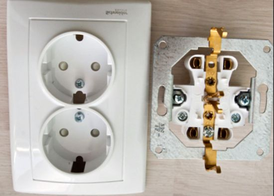

Качественный электромонтаж, Стаж 12 лет. Частный электрик, недорого.
Тел. 8 904 642 08 57 Николай.

Установить двойные розетки.
При ремонте помещения важным пунктом является планирование электропроводки. Необходимо примерно представлять расстановку мебели, чтобы правильно определить количество и положение розеток и выключателей освещения. Розетки размещают на высоте 25-30 см от пола, выключатели – 95 см. В детских комнатах и помещениях для детей высота может быть выбрана иной, в любом случае, высота элементов оговаривается отдельно, согласно индивидуальным требованиям заказчика.
Сколько стоит монтаж двойной розетки.
Количество розеток в штуках. |
Цена за монтаж 1 розетки. |
До 3 - их |
800 руб. |
6 |
750 |
9 |
700 |
12 |
600 |
15 |
500 |
До 18 штук. |
450 |
От 18 штук. |
От 400 руб. |

Вот перечень нехитрых правил при выборе количества и места установки розеток:
- по углам комнаты стоит установить двойные розетки;
- под выключателями в комнате лучше поставить розетку.
Двойные розетки и выключатели в коридорах.
Необходимости в розетках в коридорах практически нет. Достаточно установить одинарную розетку под выключателем. В длинных коридорах стоит задуматься об установке проходного выключателя, то же относится к лестницам.
Розетки на кухне.
Для электропроводки кухни удобнее завести отдельный провод в щиток. Большое количество бытовой техники требует установки большого количества розеток. Сами розетки стоит размещать на уровне 110 см над рабочей поверхностью, чтобы предотвратить попадание жидкостей. Розетки для напольных приборов, наоборот устанавливают не выше 10 см над полом, для безопасности лучше использовать розетки с закрывающейся панелью. Розетки для стиральной машины и посудомойки стоит перенести чуть в сторону от самих приборов. Подключать вытяжку проще к розетке, установленной под потолком. Выключатель подсветки на кухне удобнее вынести на фартук к розеткам для кухонных электроприборов.
Розетки и выключатели в ванной комнате.
Положение розеток в ванной комнате зависит от расположения облицовочных плиток. Как правило, выводятся провода электрики, а затем после облицовки выбирают точное место под розетки и выключатели. Следует предусмотреть розетки для таких приборов как стиральная машина, фен, электробритва. Розетка стиральной машины выводится над самой машиной. Розетки для бытовых приборов устанавливаются на фартук у зеркала в комнате. Выключатель для вентилятора можно установить на фартук рядом с выключателем света.
Спальная комната.
Спальня должна быть устроена максимально комфортно для хозяина. Здесь к месту будет проходной выключатель: у двери и дублирующий у кровати. Стоит задуматься об установки диммера для нескольких вариантах светового режима или просто создать подсветку над кроватью с выключателем на общем фартуке. С каждой стороны кровати разумно установить по двойной розетке на уровне спального места.
Гостиная комната.
В гостиной, как и в спальне, уместно использование диммера и проходного выключателя. Стоит предусмотреть розетки за шкафами, по углам комнаты, под выключателями, рядом с местом отдыха и для видео и аудио систем. Заранее задумайтесь о месте для новогодней елки и розеток под гирлянды.
Гардеробная комната или кладовая.
В помещении гардеробной или кладовой стоит разместить хотя бы одну розетку. Освещение гардеробной может быть более сложным, и предусматривать не только верхний свет, но отдельное освещение зоны с зеркалом.

Сделать электрику в квартире.
Расценки на электропроводку квартир.
Провести электропроводку в новостройке.
Электромонтаж в частном доме.
Электрика в загородном доме.
Сколько стоит замена электропроводки в двухкомнатной квартире?.
Сколько стоит проводка в 3 ком квартире?
Сколько стоит проложить проводку в четырех комнатной квартире?
Сколько стоит сделать внутреннюю проводку?
Стоимость штробление стен.
Электромонтаж двухкомнатной квартиры.
Замена электропроводки в панельном доме.
Электромонтаж проводов в бане.